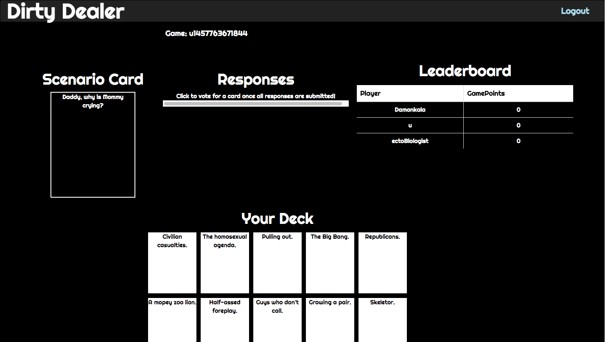

About

Hi, my name is Damon. I am a MEAN stack developer. I like to code so I can create things that can help people. Knowing that one day, what I write on the screen will impact someone's life inspires me, and makes me want to learn more, code more, and help those who want to learn.


Projects
Dirty Deals
Dirty Deals is a Cards Against Humanity clone, in which players are given a prompt, as well as 10 cards to complete or answer the prompt. The main difference between CAH and Dirty Deals, is that players vote for the best scenario, while in the original game, one player decides which one is best.
Experience

Coding House
Fremont, California October 2015 - February 2016
A live-in coding bootcamp that focuses on teaching MEAN stack development. There I was taught:
- How to use JavaScript, CSS, and HTML to build fully functional projects.
- The bulk of our lessons were about how to use NodeJs, and node’s other frameworks like Express. For storing data, used the NoSQL database MongoDB, and by extension the Node version, Mongoose, as well as the SQL Database Sqlite. We also took advantage of Google’s Firebase to create a real time database for applications such as chatrooms.
- Used Angular to bring together frontend and backend to create a full MEAN stack application. Other frameworks that we used were React and Ember.
Mentored students following my cohort
Taught how to use APIs to build useful, real world applications.
- Helped them understand the core concepts taught a Coding House.
- Graded assignments and gave critical feedback.
Participated in ATT’s Internet of things Hackathon, Palo Alto, November 2015.
- Stormpath: Created secure authentication system with very little code, and with other APIs like Facebook and Twitter, we were able to create Oauth applications that would allow users to log in to our applications using another website’s authorization system.
- Wunderground: Built a weather application, in which we were able to decide what kind of information we wanted to present to the user.
- Google Maps’ API: Made a map based application, where we could decide what information we wanted to focus on in order to provide a unique experience for the user.
Participated in the Launch Hackathon, San Francisco, February 2016.
- Sponsors included: Microsoft, IBM, and Plantronics
- Project: A device that is put on your door, and takes a picture of somebody when they knock, the picture is then sent to you, and is put through facial recognition via Microsoft Azure, letting you know if the person at the door is somebody you know.
- Technologies used: The hardware was a Tessle, and we used Microsoft Azure for its facial recognition program.
- Results: Our team had a mostly working prototype, and we were awarded the prize from Microsoft for using Azure technology.
- Sponsors included: Uber, Lyft, Dotclub, Honda, Esri, and Twitter.
- Project: Users can sign up and pick a location on a map and one or more interests. Users are then paired up by similar interest and location, and are put into an anonymous chat. Users then can decide if they want to meet up in person, and if so, they are directed to a nearby public location where they can meet up that’s equidistant to both users.
- Technologies used: Used Esri’s mapping API.
- Results: Work in progress.

Office Max
Sales Associate
- Trained to communicate with customers and offer them helpful support.
- Sought out and engaged customers in a friendly and professional manner and provided impartial, knowledgeable advice about all OfficeMax product offerings.
- Provided outstanding customer service by effectively engaging customers, identifying their needs, and offering the best solution to successfully close a sale.
- Performed register sales transactions quickly and accurately in accordance with established cash control procedures and customer service guidelines.
- Ensured that the store is clean and organized and all pricing signage is in order. Assisted in cleaning and maintenance of the store.
- Immediately responded and resolved any potential safety hazards, and report to Manager on Duty.
- Assisted in the store’s data integrity process: identifying low stock levels, inventory discrepancies and report them to management to ensure an “in-stock” store.
- Ensured returned merchandise was restocked to the correct location and that all damaged or defective merchandise is labeled and placed in the appropriate area.